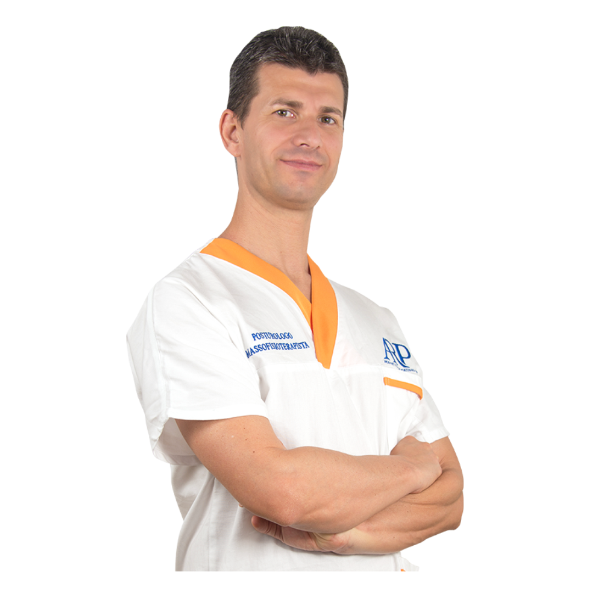

Accoglienza
Ti accolgo come persona, prima che come paziente. Uno spazio sereno dove raccontare la tua storia, senza fretta. La fiducia si costruisce qui.
Percorsi posturali personalizzati guidati da Riccardo Andreani, Posturologo e Fisioterapista. Un approccio scientifico e umano per recuperare la tua qualita di vita.

SchienaFit · Associazione Super Schiena
Tre percorsi pensati per rispondere alle esigenze più comuni: dolore, postura e prevenzione.
Un'analisi approfondita della tua postura statica e dinamica per identificare le cause reali del dolore e impostare un piano di recupero su misura.
Scopri di piùUn programma di esercizi specifici e tecniche posturali calibrato sul tuo corpo, con sessioni individuali e monitoraggio costante dei progressi.
Scopri di piùPer chi vuole mantenere una postura corretta nel tempo e prevenire recidive: esercizi quotidiani, educazione posturale e supporto continuo.
Scopri di piùAiuto le persone a liberarsi dal dolore cronico alla schiena attraverso un approccio posturale scientifico e personalizzato.
Con oltre dieci anni di esperienza clinica, ho sviluppato il Metodo A.A.P.E.C. per affrontare la radice del problema, non solo i sintomi. Ogni paziente e unico: per questo ogni percorso inizia sempre da un'analisi approfondita.
Persone che hanno ritrovato benessere e qualita di vita grazie al percorso SchienaFit
La stragrande maggioranza dei nostri pazienti riporta un miglioramento significativo già dopo le prime settimane
Decennio di pratica clinica dedicata alla posturologia e alla fisioterapia
Il Metodo A.A.P.E.C. si articola in cinque fasi progressive per un risultato duraturo
Un percorso in cinque fasi scientificamente strutturato per affrontare il dolore alla radice e costruire una postura duratura.
Ti accolgo come persona, prima che come paziente. Uno spazio sereno dove raccontare la tua storia, senza fretta. La fiducia si costruisce qui.
Analisi approfondita del tuo passato fisico ed emotivo. Capire la radice del problema, non solo i sintomi. Esami, abitudini, stress: tutto conta.
Costruiamo insieme un percorso su misura per i tuoi obiettivi, ritmi ed esigenze. Niente protocolli generici: solo un piano pensato per te.
Training individuale o in piccoli gruppi, con esercizi mirati per la tua postura. Sessioni concrete, sempre supervisionate, calibrate sul tuo livello.
Monitoraggio costante dei progressi con nuove valutazioni periodiche. Aggiustiamo il percorso in base ai risultati per assicurare benefici duraturi.
Le risposte alle domande che ci fanno più spesso i nuovi pazienti.
Nella maggior parte dei casi, si. Il mal di schiena cronico ha spesso origine da squilibri posturali che si accumulano nel tempo. Il nostro approccio identifica queste cause e le corregge sistematicamente, offrendo risultati duraturi che i soli farmaci o la fisioterapia tradizionale non riescono a garantire.
I primi miglioramenti si avvertono spesso dopo 4-6 sedute. Un percorso completo tipicamente si sviluppa su 10-15 settimane, a seconda della complessita del caso. Dopo la valutazione iniziale potrai avere un'idea precisa dei tempi per la tua situazione specifica.
Non e obbligatorio, ma se hai referti medici o esami strumentali (lastre, risonanze) portali alla prima seduta: ci aiuteranno a costruire un quadro più completo. Riccardo effettuera comunque una valutazione posturale autonoma e completa.
Assolutamente si. Il Metodo A.A.P.E.C. e adattabile a tutte le fasce d'eta. Per i bambini e utile in fase di crescita per prevenire deviazioni posturali. Per gli anziani consente di recuperare mobilita e ridurre il rischio di cadute. Ogni programma viene calibrato sulle specifiche esigenze.
Nella maggior parte dei casi si, anzi lo sport praticato correttamente accelera i risultati. Riccardo ti guidera su come modificare eventualmente la tecnica o i carichi per ottenere il massimo beneficio senza aggravare la situazione.
Contattaci per una prima consulenza gratuita. Riccardo sara felice di rispondere a tutte le tue domande.